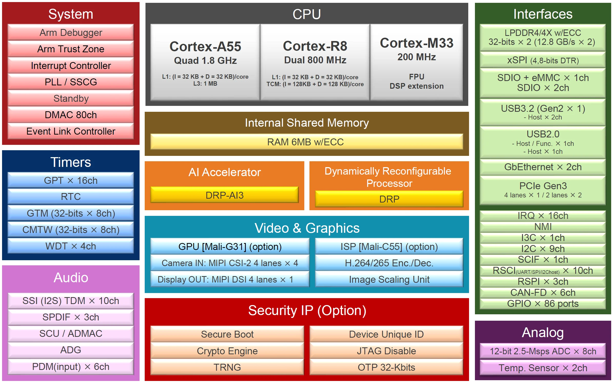

Renesas RZ/V2H
The RZ/V2H is a Renesas AI-accelerated multicore MPU built around a heterogeneous set of Arm cores: dual Cortex-A55 (application cores) plus dual Cortex-R8 (real-time cores), alongside a DSP and an AI-MAC (DRP-AI3) accelerator.


Supported MCUs
The following list includes MCUs from the RZ/V2H series and indicates whether they are supported in NuttX:
MCU |
Support |
Note |
|---|---|---|
R9A09G057 |
Yes |
CR8_0 core only |
Peripheral Support
The following list indicates peripherals supported in NuttX on the CR8_0 core:
Peripheral |
Support |
Notes |
|---|---|---|
CLOCK |
Yes |
BSP clock tree init (PLL), internal use only |
GIC |
Yes |
Interrupt controller init (CPU0 + per-CPU) |
MPU |
Yes |
Static PMSAv7 region table (ITCM/DTCM/SRAM/code) |
TIMER |
Yes |
MPCore Private Timer used as the system tick source |
SCI |
Yes |
Interrupt-driven SCI-B asynchronous UART on channels 0-9 |
GPIO |
Yes |
Basic operations (config/read/write), no interrupt support |
RIIC I2C |
Yes |
Interrupt-driven RIIC master on channels 0-8 |
SCI I2C |
Yes |
Interrupt-driven SCI simple I2C master on channels 0-9 |
PWM |
Yes |
GPT (General PWM Timer) PWM on channels 0-15 |
CAN |
Yes |
CAN-FD on channels 0-5 |
QSPI |
Yes |
xSPI controller in QSPI mode, manual-command transfers only |
CLOCK
rzv2h_clockconfig() calls into bsp_clock_init() from the vendored
Renesas FSP BSP to program the PLL and clock tree. It is invoked once
during boot and is not user-configurable through Kconfig.
GIC
The Generic Interrupt Controller is brought up by up_irqinitialize(),
using NuttX’s common ARM GIC support: CPU0-only initialization followed by
per-CPU initialization.
MPU
A static PMSAv7 region table protects the CR8_0 memory map (ITCM, DTCM, SRAM and the executable code window). Regions are set up once at boot and are not reconfigurable at runtime.
TIMER
The Arm MPCore Private Timer is used as the system tick source, clocked
from the BSP clock tree and reloaded to match CLK_TCK.
SCI
The Serial Communication Interface (SCI) provides multiple serial
communication modes. NuttX currently supports interrupt-driven UART operation
on channels 0 through 9 through the SCI-B lower-half driver.
CONFIG_RZV2H_UART_SCI enables the driver and
CONFIG_RZV2H_SCI_B_UARTn selects each required channel. The standard
CONFIG_SCIn_* options configure the channel and select the console.
The driver supports early console output and registers the selected
console as /dev/console and /dev/ttyS0. Other enabled channels are
registered in ascending channel order.
Runtime baud-rate changes are supported through the standard termios
TCGETS and TCSETS operations.
Hardware flow control and DMA are not implemented yet.
An SCI channel can be used for UART or for simple I2C (see SCI I2C below), but not for both at once.
GPIO
The GPIO driver provides fundamental support for pin configuration, read, and write operations. GPIO interrupt support is currently unavailable.
INTC SEL (Interrupt Select) Lines
The CR8 core’s INTC provides a
pool of 127 programmable “SEL” lines (SEL0-SEL126, GIC IRQ numbers
353-479) whose peripheral event mapping is set through the INTC INTSEL
registers. Peripheral drivers that need one of these programmable lines
request a specific SEL number and event through
rzv2h_intsel_connect_event().
Default SEL IDs
The 127-line SEL pool (SEL0-SEL126, IRQ 353-479) is conventionally partitioned by module, allocated from the top of the range downward:
Module |
Count |
IRQ range (>= 353) |
|---|---|---|
TINT |
32 (tint0-tint31) |
479-448 |
RIIC I2C |
9 (riic0-riic8) |
447-430 (txi/rxi only) |
CAN |
6 (can0-can5) |
419-400 (gerr/grecc, rec/trx/err) |
Changing interrupt-select IDs (RIIC2 as an example)
When the default interrupt-select ID needs to change, e.g. to move RIIC2 off its default TXI/RXI SEL IDs (443/442) and onto SEL IDs 397/396 instead:
Run
make menuconfigand navigate toSystem Type -> RZ/V2H Configuration Options -> RIIC I2C support -> RIIC 2.Set
RIIC2 TXI interrupt-select (SEL) IRQ numberto397.Set
RIIC2 RXI interrupt-select (SEL) IRQ numberto396.
Rebuild and reflash after changing either option so the new INTSEL values are picked up.
RIIC I2C
The RIIC driver provides interrupt-driven I2C master operation on channels 0 through 8.
CONFIG_RZV2H_RIIC_I2C enables the driver and
CONFIG_RZV2H_RIICn selects each required channel. Each channel has
independent Kconfig options for bus bitrate, SCL rise/fall times, duty
cycle, noise filter stages, TXI/RXI interrupt-select (SEL) IRQ numbers,
and interrupt priority.
I2C bus reset recovery (CONFIG_I2C_RESET) is supported. The driver
bit-bangs SCL to clock out stuck slaves, then generates a START+STOP
sequence to reset slave state machines.
SCI I2C
The SCI I2C driver provides interrupt-driven I2C master operation (SCI simple I2C mode, up to 400 kHz) on channels 0 through 9.
CONFIG_RZV2H_SCI_I2C enables the driver and
CONFIG_RZV2H_SCI_I2Cn selects each required channel; the channel’s
SCI UART must be disabled. Each channel has independent Kconfig options
for bus bitrate, SDA output delay, noise filter clock, bit-rate modulation,
and interrupt priority. Channel n is registered as
/dev/i2c<CONFIG_RZV2H_SCI_I2C_BUS_OFFSET + n>.
I2C bus reset recovery (CONFIG_I2C_RESET) is supported, using the same
method as RIIC I2C.
PWM
The RZ/V2H use the pulsed output control implemented using the GPT (General PWM Timer). The driver supports PWM with configurable frequency and duty cycle on channels 0 through 15.
CONFIG_RZV2H_GPT_PWM enables the GPT PWM driver. Each channel is
individually selectable via CONFIG_RZV2H_GPTn_PWM.
The output pin (GTIOCA or GTIOCB) for each channel is defined in the
board’s board.h (BOARD_GPTn_GTIOC_GPIO and BOARD_GPTn_USE_GTIOCA).
CAN
The CAN-FD driver supports CAN FD operation on channels 0 through 5.
CONFIG_RZV2H_CANFD enables the driver and CONFIG_RZV2H_CANFDn
selects each required channel. Each channel has independent Kconfig
options for the nominal and data bit rates (computed from the rates and
sample point, or set manually), delay compensation, the receive FIFO,
the number of TX message buffers, channel error interrupts, REC/TRX/ERR
interrupt-select (SEL) IRQ numbers, and interrupt priority.
Error reporting (CONFIG_CAN_ERRORS) is supported.
With CONFIG_CAN_LOOPBACK, each channel enters internal or external
loopback mode when opened, as selected by
CONFIG_RZV2H_CANFD_LOOPBACK_INTERNAL or
CONFIG_RZV2H_CANFD_LOOPBACK_EXTERNAL.
With CONFIG_RZV2H_CANFD_SOCKET, the channels are SocketCAN network
interfaces (can0 to can5) instead of character devices.
QSPI
rzv2h_qspi.c implements the standard NuttX struct qspi_dev_s
interface (arch/arm/src/rzv2h/rzv2h_qspi.c) on top of the Renesas FSP
xSPI-QSPI HAL (r_xspi_qspi). It is intended to drive a SPI NOR flash
device wired to the xSPI controller, using the NuttX QSPI-based MTD flash
drivers (n25qxxx, mx25rxx, w25qxxxjv, gd25, gd55,
s25fl1).
Commands and memory reads/writes are issued through
R_XSPI_QSPI_DirectTransfer() (manual-command mode); each transaction
moves at most 8 bytes, so larger transfers are split into a sequence of
transactions by the driver. There is no XIP (execute-in-place,
memory-mapped) support and no DMA: all data moves through the CPU, so
throughput is limited compared to a memory-mapped or DMA-driven transfer.
Protocol support
The n25qxxx MTD driver always requests Quad I/O Fast Read (0xEB).
rzv2h_qspi_memory() sends that read on the wire in whichever protocol
is selected by the CONFIG_RZV2H_<BOARD>_QSPI_N25QXXX_PROTOCOL_* choice
(<BOARD> is EVK or RDK).
Program, erase, and status/configuration-register commands always use
1S-1S-1S, whatever read protocol is selected.
Protocol |
Kconfig option |
Read command |
Status |
|---|---|---|---|
|
|
READ ( |
Supported |
|
|
Dual I/O Fast Read ( |
Supported |
|
|
Quad I/O Fast Read ( |
Supported (default) |
|
|
FAST READ ( |
Supported |
|
|
DTR FAST READ ( |
Needs a board that connects |
|
none |
none |
Not supported |
2S-2S-2S has no Kconfig read option. The driver still sends it for
commands that set the dual-instruction flags (QSPICMD_IDUAL or
QSPIMEM_IDUAL).
DDR protocols (4S-4D-4D and 8D-8D-8D) sample read data with the
XSPI0_DS strobe. The hardware manual states: “DDR access without
XSPI0_DS is not supported”. A board must connect XSPI0_DS to a flash
that drives it before 4S-4D-4D can work.
8D-8D-8D is not supported for four reasons:
The FSP xSPI-QSPI HAL rejects it:
R_XSPI_QSPI_SpiProtocolSet()returnsFSP_ERR_INVALID_ARGUMENT. TheSOPIandDOPImodes are rejected the same way.It needs
XSPI0_IO4-XSPI0_IO7andXSPI0_DSconnected to an octal flash.The Quad SPI NOR flash on the RZV2H boards has only 4 data lines.
The generic NuttX QSPI interface (
include/nuttx/spi/qspi.h) has no flags for octal or DDR transfers.
The xSPI serial clock is derived from a dedicated CPG divider that only
feeds this peripheral (four ratios: source clock divided by 2, 4, 8, or
16); rzv2h_qspi_setfrequency() picks the closest ratio that does not
exceed the requested frequency.
See the RZV2H-EVK board documentation for board-level bring-up, partitioning, and configuration details.